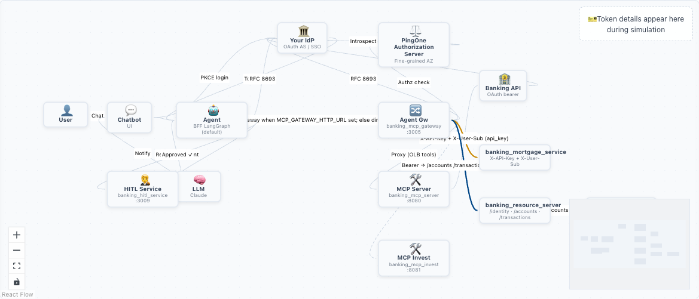
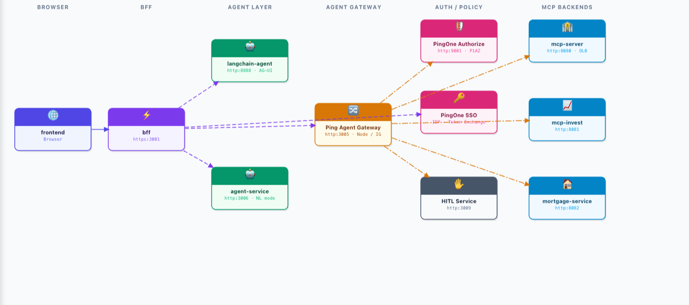

How the AI Demo fits together — the token-exchange flow, the system architecture graph, and the agent-gateway service map. The token flow below is fully interactive; the other two are snapshots of the live, interactive diagrams in the demo app.
RFC 8693 token exchange across Browser → BFF → Agent Gateway → MCP. Fully interactive — hover and step through it below.
The full system graph — identity provider, authorization server, agent, agent gateway, MCP servers, and banking services, with the protocol on each connection. This is a static snapshot of the pannable React Flow diagram in the live app.

Swim-lane view of the agent gateway architecture: Browser → BFF → Agent Layer → Agent Gateway → Auth/Policy → MCP backends. Static snapshot of the editable Konva canvas in the live app.
